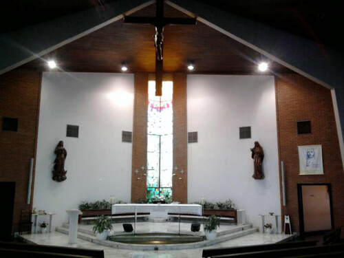

A Paróquia Santa Rita de Cássia situa-se na cidade de Sorocaba, no bairro de Vila Santana, Rua Bartolomeu de Gusmão, 333. Pertence à Arquidiocese de Sorocaba.
A Capela de Santa Rita foi construída em 1923, junto com a formação do bairro de Vila Santana. Em 1956, esse bairro que também era chamado de Além-Linha, fora anteriormente desmembrado da Paróquia da Catedral e progredira bastante para ser elevado a Paróquia. Dom José Carlos de Aguirre assinou o decreto de criação da nova Paróquia de Santa Rita, no dia 19 de março de 1956.1 . Na década de 1990 ocorreu a construção do novo prédio da igreja, ao lado do antigo e com arquiteura moderna. A igreja antiga contém uma torre com sinos e um imenso relógio com quatro vistas para o bairro.
Foram Párocos mais antigos o Frei Florêncio Hannemann, Frei Pedro Alcântara, Frei Pedro de Alcântara, Frei Cuniberto Höerning, todos da Ordem dos Franciscanos Menores - OFM, entre outros. O Pároco atual é o Pe. Manoel Junior. Durante 37 anos de ministério e 84 de idade o Diácono Permanente foi Osvaldo Bistão, que faleceu em dezembro de 2010.
Entre as atividades estão a Festa de Santa Rita de Cássia (Benção das Rosas), Novena e festa em homenagem a Santa Rita de Cássia, que ocorre no mês de maio.